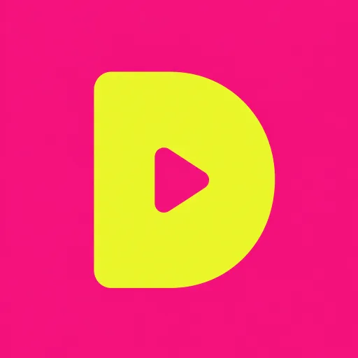

Product photo → vertical ad
Upload one image and ask for a short 9:16 product video within a budget.

Dora
AI video · Web, iPhone and AndroidUpload a photo or write a prompt and get a finished video back. On the web, on iPhone and on Android.
Four tools — model discovery, video generation, image generation, job status — and sixteen models behind them, returned cheapest first with the coin cost of each. Every compatible assistant gets the same set; nothing is reserved for one vendor. Enough for an agent to finish the job without learning a separate API for every model provider. The full specification is public, limitations included.
Dora is not built for one vendor. Pick the assistant you already use — the setup takes about a minute and the account you create works everywhere else too. Listed alphabetically.
Available in the ChatGPT app directory: add Dora AI Video, sign in and generate from a normal chat. Developer mode by URL still works too.
Setup guide →Add the remote connector in Claude’s settings, or install it in Claude Code.
Setup guide →One click adds Dora to Cursor, then you authenticate and generate.
Setup guide →Add Dora to the Antigravity IDE or the agy CLI and let Gemini drive it.
Setup guide →Windsurf, Cline, Continue, Zed, Goose, LM Studio, OpenClaw, LibreChat and anything else that speaks MCP.
All connectors →Generate directly on doravideo.com or in the iPhone app. Same account, same balance.
Open Dora →Dora is available in the ChatGPT app directory: add Dora AI Video to ChatGPT. Step by step, with the other video plugins: how to make a video with ChatGPT. What each model costs in coins: ChatGPT video generator cost.
Users may never search for “MCP”. They ask how to animate a photo, make a product ad, generate cheap video, or give an AI agent video capabilities. Dora answers all of those jobs.
Upload one image and ask for a short 9:16 product video within a budget.
Describe the scene, duration, resolution, and whether native audio matters.
Give a compatible agent four focused tools and one shared Dora balance.
This is example assistant reasoning. Dora’s current model list exposes default coin costs, not a guaranteed quote for every parameter combination. A connected assistant can show a proposed choice and generate after the user confirms.
On the web, Dora Pro costs $4.99 a week (the first week $1.99) with 500 coins a week, or $119.99 a year with 500 coins a month; prices and coins in the iPhone app can differ. The exact cost changes with the model, duration, resolution, and audio. Three examples below; all sixteen are listed in the public specification.
Check Dora’s live model page before purchasing because model pricing can change.
Our view: Dora is strongest when the goal is simply “make the video” with minimal integration. Infrastructure platforms remain stronger for teams building their own video backend.
Dora is designed for that workflow. One standard MCP connection gives any compatible AI client — Claude, ChatGPT, Google Antigravity, Cursor and others — the same focused tools to list models, create video or images, and check asynchronous jobs.
No. MCP is the connection method. After setup, ask for a product video, animate a photo, request a vertical ad, or set a maximum cost in normal language.
On the web, Dora Pro costs $4.99 a week (the first week $1.99) with 500 coins a week, or $119.99 a year with 500 coins a month; prices and coins in the iPhone app can differ. A 4-second 480p video currently starts at 10 coins with Grok Imagine 1.5. Other models and settings cost more, which is why Dora publishes concrete configurations instead of one ambiguous “videos per month” number.
Yes. A connected assistant can inspect Dora’s model list and compare starting costs when you ask it to optimize for price. Ask it to show the proposed model and estimated cost, then wait for your confirmation.
Any client that speaks the Model Context Protocol. In ChatGPT it is available in the app directory as Dora AI Video. Dora publishes step-by-step guides for Claude, ChatGPT, Google Antigravity and Cursor, and the same endpoint works with Windsurf, Cline, Continue, Zed, Goose and LM Studio. The account and balance are shared with doravideo.com and the iPhone app.
Saga Labs, an independent AI engineering studio that builds agent flows, MCP servers, automations, and consumer apps. Dora is our production example of packaging a complex AI workflow into a simple product.